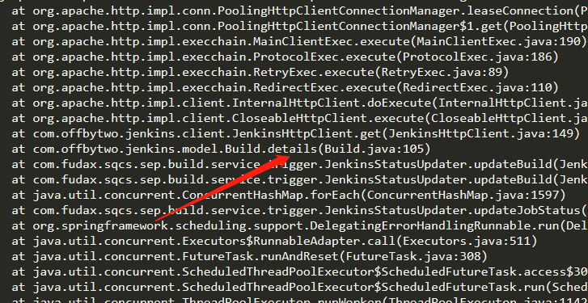
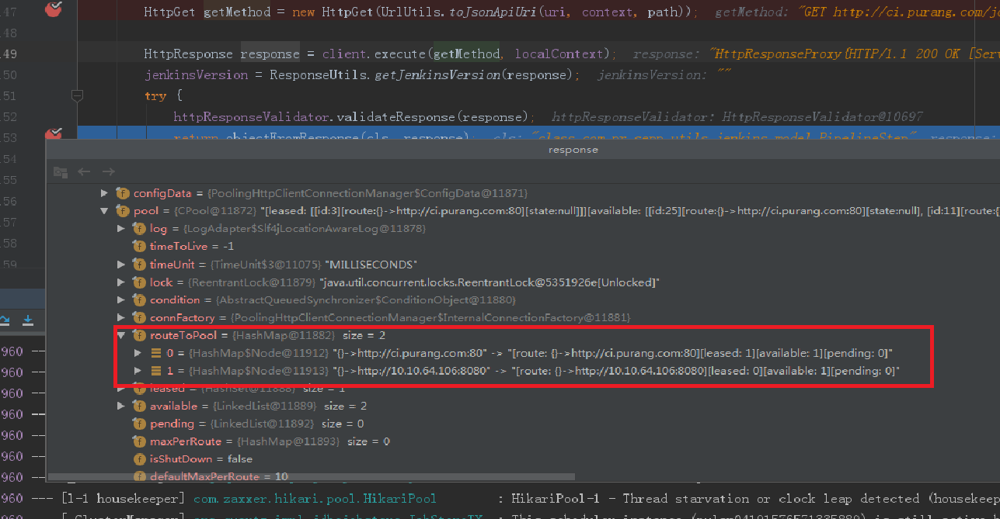
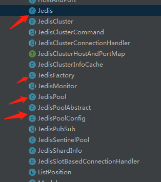

早上作为能效平台系统的使用高峰期，系统负载通常比其它时间段更大一些，某个时间段会有大量用户登录。当天系统开始有用户报障，发布系统线上无法构建发布，然后后续有用户不能登录系统，系统发生假死，当然系统不是真的宕机，而是所有和数据库有关的连接都被阻塞，随后查看日志发现有大量报错。
和数据库连接池相关：
Caused by: org.springframework.jdbc.CannotGetJdbcConnectionException: Failed to obtain JDBC Connection; nested exception is java.sql.SQLTransientConnectionException: HikariPool-1 - Connection is not available, request timed out after 30002ms.
可以看出上面的报错和数据库连接有关，大量超时。通过对线上debug日志的分析，也验证了数据库连接池被大量消耗。
[DEBUG] c.z.h.p.HikariPool: HikariPool-1 - Timeout failure stats (total=20, active=20, idle=0, waiting=13)
这是开始大量报错前的日志。我们可以看到此时HikariPool连接池已经无法获取连接了，active=20表示被获取正在被使用的数据库连接。waiting表示当前正在排队获取连接的请求数量。可以看出，已经有相当多的请求处于挂起状态。
所以当时我们的解决办法是调整数据库连接池大小，开始初步认为是，高峰时期，我们设置的连接池数量大小，不足以支撑早高峰的连接数量导致的。
jdbc.connection.timeout=30000
jdbc.max.lifetime=1800000
jdbc.maximum.poolsize=200
jdbc.minimum.idle=10
jdbc.idle.timeout=60000
jdbc.readonly=false
我们将将数据库连接池的数量调整到了200。
及时将配置调整成了200，服务重启也恢复了正常，但是我仍然认为系统存在连接泄露的风险，我试图从日志表现出的行为里寻找蛛丝马迹。我在访问日志看到每次在系统崩溃前，其实都有人在做构建，而且构建经常点击没反应，我当时添加的构建debug日志也显示了这一点。我开始怀疑是构建造成的连接泄露。
在这里我简单说下构建代码处的逻辑
我开始观察自己写的代码，可是看了多遍，我也发现不了这段代码和数据库连接有啥关系，大多数人包括当时自己来说，数据库连接的泄露，大多数情况应该是服务和数据库连接的过程中发生了阻塞，导致连接泄露。但是现在来看，很容易能发现问题所在，看当时的代码：
@Transactional(rollbackFor = Exception.class)
public void build(BuildHistoryReq buildHistoryReq) {
//1.封装操作
//2.调用jenkins Api
//3.数据库更新写入
}
这就是当时的代码入口，当然代码处没有这么简单。可以看到我在方法入口就加上了Transactional注解，这里的意思其实就是发生错误，抛出异常时，数据库回滚。
问题就出现在了这里，当有用户点击构建时，请求刚进入build方法时，就会从数据库连接获取一个连接。可是此时，程序并没有和数据库相关的操作，如果此时代码在步骤1或者2处出现io或者网络阻塞，就会导致，事务无法提交，连接也就会一直被该请求占用。而再大的连接池也会被耗费殆尽。从而造成系统崩溃。
通常情况下作为非业务部门，没有涉及到核心的业务，像支付，订单，库存相关的操作时，事务在可读层面并没有特别高的要求。通常也只涉及到，多表操作同时更新时，保证数据一致性，要么同时成功要么同时失败。而使用
@Transactional(rollbackFor = Exception.class)
足以。
而上述代码该如何改进呢？？
首先分析有没有需要使用事务的必要。在步骤3中，数据操作，看代码后发现只有对一张表的操作，同时和其它操作没有相关性。而且本身属于最后一个步骤。所以在此代码中完全没有必要使用，删除注解即可。
当然如果步骤3操作数据库是多表操作，具有强相关性，数据一致，我们可以这样做。将和步骤3无关的步骤分开,变成两个方法，那么在1,2处发生阻塞也不会影响到数据库连接。
public void build(BuildHistoryReq buildHistoryReq) {
//1.封装操作
//2.调用jenkins Api
update**(XX);
}
@Transactional(rollbackFor = Exception.class)
public void update**(XX xx) {
//3.数据库更新写入
}
这里需要注意，注解事务的用法，方法必须是公开调用的
当时找到数据连接池泄露的原因后，我第一步就是去掉了事务，然后加上了一些日志，这时我已经能确定代码在jenkinsclient处出现了问题，但是仍然不确定问题出在了哪，我只能加上一些日志，同时通过监控继续观察。
果然在hotfix的第二天还是出现了我预料中的事情，构建发布仍然有问题，当然此时其它功能是不受影响了。我观察日志发现构建开始并在该处阻塞
jenkinsClient.startBuild(jobName, params);
随后我观察了项目监控。观察线程情况，发现大量http-nio的线程阻塞了，而这个线程和httpclient相关。
java.lang.Thread.State: WAITING (parking)
at sun.misc.Unsafe.park(Native Method)
- parking to wait for <0x00000007067027e8> (a java.util.concurrent.locks.AbstractQueuedSynchronizer$ConditionObject)
at java.util.concurrent.locks.LockSupport.park(LockSupport.java:175)
at java.util.concurrent.locks.AbstractQueuedSynchronizer$ConditionObject.await(AbstractQueuedSynchronizer.java:2039)
at org.apache.http.pool.AbstractConnPool.getPoolEntryBlocking(AbstractConnPool.java:379)
at org.apache.http.pool.AbstractConnPool.access$200(AbstractConnPool.java:69)
at org.apache.http.pool.AbstractConnPool$2.get(AbstractConnPool.java:245)
- locked <0x00000007824713a0> (a org.apache.http.pool.AbstractConnPool$2)
at org.apache.http.pool.AbstractConnPool$2.get(AbstractConnPool.java:193)
随后我跟进源码查看了AbstractConnPool类的379行
可以看到线程走到379行执行了this.condition.await()后进入无限期的等待，所以此时如果没有线程执行this.condition.signal()就会导致该线程一直处于waiting状态，而前端也会迟迟收不到相应，导致请求timeout。
我们再分析下源码，看看什么情况下会导致线程跑到该处：
/**
* 获取http连接，从名称也能看出该方法会造成阻塞
*/
private E getPoolEntryBlocking(
final T route, final Object state,
final long timeout, final TimeUnit timeUnit,
final Future<E> future) throws IOException, InterruptedException, TimeoutException {
Date deadline = null;
if (timeout > 0) {
deadline = new Date (System.currentTimeMillis() + timeUnit.toMillis(timeout));
}
this.lock.lock();
try {
final RouteSpecificPool<T, C, E> pool = getPool(route);
E entry;
for (;;) {
Asserts.check(!this.isShutDown, "Connection pool shut down");
for (;;) {
entry = pool.getFree(state);
if (entry == null) {
break;
}
if (entry.isExpired(System.currentTimeMillis())) {
entry.close();
}
if (entry.isClosed()) {
this.available.remove(entry);
pool.free(entry, false);
} else {
break;
}
}
if (entry != null) {
this.available.remove(entry);
this.leased.add(entry);
onReuse(entry);
return entry;
}
// New connection is needed
final int maxPerRoute = getMax(route);
// Shrink the pool prior to allocating a new connection
final int excess = Math.max(0, pool.getAllocatedCount() + 1 - maxPerRoute);
if (excess > 0) {
for (int i = 0; i < excess; i++) {
final E lastUsed = pool.getLastUsed();
if (lastUsed == null) {
break;
}
lastUsed.close();
this.available.remove(lastUsed);
pool.remove(lastUsed);
}
}
if (pool.getAllocatedCount() < maxPerRoute) {
final int totalUsed = this.leased.size();
final int freeCapacity = Math.max(this.maxTotal - totalUsed, 0);
if (freeCapacity > 0) {
final int totalAvailable = this.available.size();
if (totalAvailable > freeCapacity - 1) {
if (!this.available.isEmpty()) {
final E lastUsed = this.available.removeLast();
lastUsed.close();
final RouteSpecificPool<T, C, E> otherpool = getPool(lastUsed.getRoute());
otherpool.remove(lastUsed);
}
}
final C conn = this.connFactory.create(route);
entry = pool.add(conn);
this.leased.add(entry);
return entry;
}
}
boolean success = false;
try {
if (future.isCancelled()) {
throw new InterruptedException("Operation interrupted");
}
pool.queue(future);
this.pending.add(future);
if (deadline != null) {
success = this.condition.awaitUntil(deadline);
} else {
this.condition.await();
success = true;
}
if (future.isCancelled()) {
throw new InterruptedException("Operation interrupted");
}
} finally {
// In case of 'success', we were woken up by the
// connection pool and should now have a connection
// waiting for us, or else we're shutting down.
// Just continue in the loop, both cases are checked.
pool.unqueue(future);
this.pending.remove(future);
}
// check for spurious wakeup vs. timeout
if (!success && (deadline != null && deadline.getTime() <= System.currentTimeMillis())) {
break;
}
}
throw new TimeoutException("Timeout waiting for connection");
} finally {
this.lock.unlock();
}
}
从源码我们可以看出有几处必要条件才会导致线程会无限期等待：
其实整体逻辑就是，从池里获取连接，如果有就直接返回，没有，判断当前请求出去的路由有没有到达该路由的最大值，如果达到了，就进行等待。如果timeout为0就会进行无限期等待
而这些值我本身也没有做任何设置，我当时的第一想法就是，给http请求设置超时时间。也就是给每个client设置必要的参数
1.jenkinsClient分配超时时间
public HttpClientBuilder clientBuilder() {
HttpClientBuilder httpClientBuilder = HttpClientBuilder.create();
RequestConfig.Builder builder = RequestConfig.custom();
//该参数对应AbstractConnecPool getPoolEntryBlocking方法的timeout
builder.setConnectionRequestTimeout(5 * 1000);
//数据传输的超时时间
builder.setSocketTimeout(20 * 1000);
//该参数为，服务和jenkins连接的时间（通常连接的时间都很短，可以设置小点）
builder.setConnectTimeout(5 * 1000);
httpClientBuilder.setDefaultRequestConfig(builder.build());
return httpClientBuilder;
}
2.构建JenkinsClient和更新使用的JenkinsClient分离
其实我已经尝试用池化的思想来解决该问题了。
但hotfix的第二天，又出现了一个诡异的bug：
构建可以，但是无法同步job的状态。这里出现这个问题的原因在于我将构建和更新两个过程使用的jenkinsClient分离成两个，所以这个过程相互独立，互不影响，所以，更新的client出了问题但是构建的client仍然能正常使用。
但是更新过程的JenkinsClient出现的问题让我百思不得其解。我们先看看更新状态过程会使用到的api（接口）
//获取对应的job
1 JobWithDetails job = client.get(UrlUtils.toJobBaseUrl(folder, jobName), JobWithDetails.class);
//获取job构建的pipeline流水
2 client.get("/job/" + EncodingUtils.encode(jobName) + "/" + version + "/wfapi/describe", PipelineStep.class);
//获取对应job某次build的详情
3 client.get(url, BuildWithDetails.class);
bug问题1：为什么全量更新job和增量更新job使用的是同一个JenkinsClient，但是全量更新仍然正常获取值，而增量更新job状态的线程确出现阻塞超时（超时是因为前面我设置了timeout，使得请求不会一直阻塞下去）。
要回答这个问题，就要回到线程的相关问题了，
this.condition.wait()会导致当前线程阻塞，并不会影响到另外线程。而更新使用了两个线程。所以这个问题也比较好回答。
bug问题2：为什么同一个线程（增量更新job线程）调用不同api，有的成功，而有的会阻塞：
解决这个问题，我们还是得回到AbstractConnPool中的方法getPoolEntryBlocking（）来看：
if (pool.getAllocatedCount() < maxPerRoute) {
}
当前请求的路由如果已经达到最大值了就会阻塞等待。那么同一个jenkinsclient，按理来说不可能会出现不同的路由。所以同一个client要么都能访问，要么都会阻塞，怎么会出现有的能访问有的会阻塞。为了寻求问题的答案，我翻阅了JenkinsClient的源码，结合日志，发现服务每次阻塞的方法是：

不管多少次，每次都会完美的在该地方阻塞：对应上面的api 3：
//获取对应job某次build的详情
3 client.get(url, BuildWithDetails.class);
这个url和其它两个api拿到的路由都有区别：可以跟随我一起看源码：
public class Build extends BaseModel {
private int number;
private int queueId;
private String url;
}
我们可以看到url是属于Build的属性，并非client我们设置的值，当然有人会觉得该值可能是通过将配置的url设置过来的。我们可以接着看,哪些方法可能会给build设置url，三个构造函数，一个set方法都可以，如果我们继续只看源码仍然很难找到问题所在，所以这时候我开始启动服务debug；
发现了问题在哪：

可以看出调用jenkins的这个api出现了两个router，也可以看出这个url是jenkins返回的，查阅资料可以看到，jenkins系统设置时可以设置这个url。
所以这个bug也能很好的解释了，对于httpclient来说，每个router默认可以最多两个连接。虽然是同一个调用api采用的是同一个jenkinsClient，但是却维护了两个router，一个是从配置中获取，一个是jenkins返回的，这个是配置不一致导致的。
JenkinsClient分配连接数：
public HttpClientBuilder clientBuilder() {
HttpClientBuilder httpClientBuilder = HttpClientBuilder.create();
RequestConfig.Builder builder = RequestConfig.custom();
builder.setConnectionRequestTimeout(5 * 1000);
builder.setSocketTimeout(20 * 1000);
builder.setConnectTimeout(5 * 1000);
httpClientBuilder.setDefaultRequestConfig(builder.build());
//每个路由最多有10个连接（默认2个）
httpClientBuilder.setMaxConnPerRoute(10);
//设置连接池最大连接数
httpClientBuilder.setMaxConnTotal(20);
return httpClientBuilder;
}
给JenkinsClient添加健康检查，并手动更新不能用的Client
@Slf4j
public class JenkinsClientManager implements Runnable {
private volatile boolean flag = true;
private final JenkinsClientProvider jenkinsClientProvider;
public JenkinsClientManager(JenkinsClientProvider jenkinsClientProvider) {
this.jenkinsClientProvider = jenkinsClientProvider;
}
@Override
public void run() {
while (flag) {
try {
checkJenkinsHealth();
//每30秒检查一次
Thread.sleep(30_000);
} catch (Exception e) {
log.warn("check health error:{}", e.getMessage());
}
}
}
public void checkJenkinsHealth() {
log.debug("check jenkins client health start");
//获取client是否可用
available = isAvailable(..)
if (!available || !queryAvailable) {
//更新client
jenkinsClientProvider.retrieveJenkinsClient();
}
}
private boolean isAvailable(Set<Map.Entry<String, JenkinsClient>> entries) {
boolean available = true;
for (Map.Entry<String, JenkinsClient> entry : entries) {
boolean running = entry.getValue().isRunning();
if (!running) {
log.debug("jenkins running error");
available = false;
}
}
return available;
}
@PostConstruct
public void start() {
TaskSchedulerConfig.getExecutor().execute(this);
}
}
采用池化技术解决client高可用和重复利用问题
虽然我手动写了一个JenkinsClientManager每30秒来维护一次client，但是这种手工的方式并不好：
目前我们都知道各种池化技术:线程池、数据库连接池、redis连接池。
笔者在实现jenkinsClient pool之前，参考了线程池、数据库连接池的实现、发现其底层实现较为复杂、redis的连接池技术相对来说容易看懂和学习、所以采用了和jedis一样的实现方式来实现JenkinsClient的连接池
这是jedis的类结构目录，其实重点在我标记的这5个类。
jedis本身也是采用的commons-pool2提供的池技术实现的，接下来我会简单介绍一下该工具提供的池化技术。
JenkinsClient连接池应该要具备哪些功能？？
对于提到的这些功能，我将通过commons-pool2包来实现
PooledObjectFactory：该接口管理着bean的生命周期（An interface defining life-cycle methods for instances to be served by an）
GenericObjectPool：实例都会放入该池中进行管理：
//所有的可用连接
private final Map<IdentityWrapper<T>, PooledObject<T>> allObjects = new ConcurrentHashMap<>();
//空闲的可用连接
private final LinkedBlockingDeque<PooledObject<T>> idleObjects;
//获取可用连接
T borrowObject() throws Exception, NoSuchElementException,
IllegalStateException;
//资源释放（将连接放回连接池）
void returnObject(T obj) throws Exception;
配置（BaseObjectPoolConfig，但是我们继承GenericObjectPoolConfig，该类给出了大量的默认值）
#链接池中最大连接数,默认为8
maxTotal
#链接池中最大空闲的连接数,默认也为8
maxIdle
#连接池中最少空闲的连接数,默认为0
minIdle
#连接空闲的最小时间，达到此值后空闲连接将可能会被移除。默认为1000L*60L*30L
minEvictableIdleTimeMillis
#连接空闲的最小时间，达到此值后空闲链接将会被移除，且保留minIdle个空闲连接数。默认为-1
softMinEvictableIdleTimeMillis
#当连接池资源耗尽时，等待时间，超出则抛异常，默认为-1即永不超时
maxWaitMillis
#当这个值为true的时候，maxWaitMillis参数才能生效。为false的时候，当连接池没资源，则立马抛异常。默认为true
blockWhenExhausted
#空闲链接检测线程检测的周期，毫秒数。如果为负值，表示不运行检测线程。默认为-1.
timeBetweenEvictionRunsMillis
#在每次空闲连接回收器线程(如果有)运行时检查的连接数量，默认为3
numTestsPerEvictionRun
#默认false，create的时候检测是有有效，如果无效则从连接池中移除，并尝试获取继续获取
testOnCreate
#默认false，borrow的时候检测是有有效，如果无效则从连接池中移除，并尝试获取继续获取
testOnBorrow
#默认false，return的时候检测是有有效，如果无效则从连接池中移除，并尝试获取继续获取
testOnReturn
#默认false，在evictor线程里头，当evictionPolicy.evict方法返回false时，而且testWhileIdle为true的时候则检测是否有效，如果无效则移除
testWhileIdle
了解了这些我们对于需要开发的连接池就很轻松了：
连接池写完，目前也只是在测试环境运行，还在观察阶段
有个特别的问题也需要指出来，该问题是笔者在开发时没有注意的问题，也是此次线上产生问题的原因
笔者将原来更新频率从15s调整到了10s，问题就暴露出来了，对于1个job，可能会拉出上百个build，每次会调用3个api接口，如果每次有十个job，每次更新会在10秒内完成，随着job增加，和构建历史增加（虽然有设置保留多少版本，但是api还是会拉出很奇怪的历史build），会超量发出大量http请求。所以我在代码层面也做了改动，每次只更新每个job的前5个最新的build，这样下来，请求量会降低很多
List<Build> buildList = builds.stream().sorted(Comparator.comparing(Build::getNumber).reversed()).limit(5).collect(toList());本次事故整体来讲，还是笔者技术有限，解决问题时绕了很多弯，花了大量时间研究源码。我也总结了以下几点